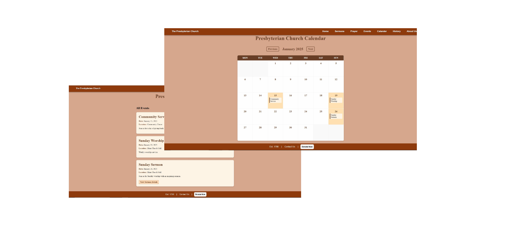

All Projects
A closer look at the projects I've worked on, from AI lung-scan classification to church calendars and travel planning apps.

Presbyterian Church Website
A responsive site showcasing events, sermons, and an interactive calendar. Built with HTML, CSS, and JavaScript, focusing on community engagement.

MaLung
AI-driven COVID-19 lung-scan classifier built with Docker & Microsoft Azure. Integrated a responsive Figma design with a MariaDB database via PHP.

Travercity
A travel planning web app that features real-time weather integration and location-based recommendations for a better itinerary experience.